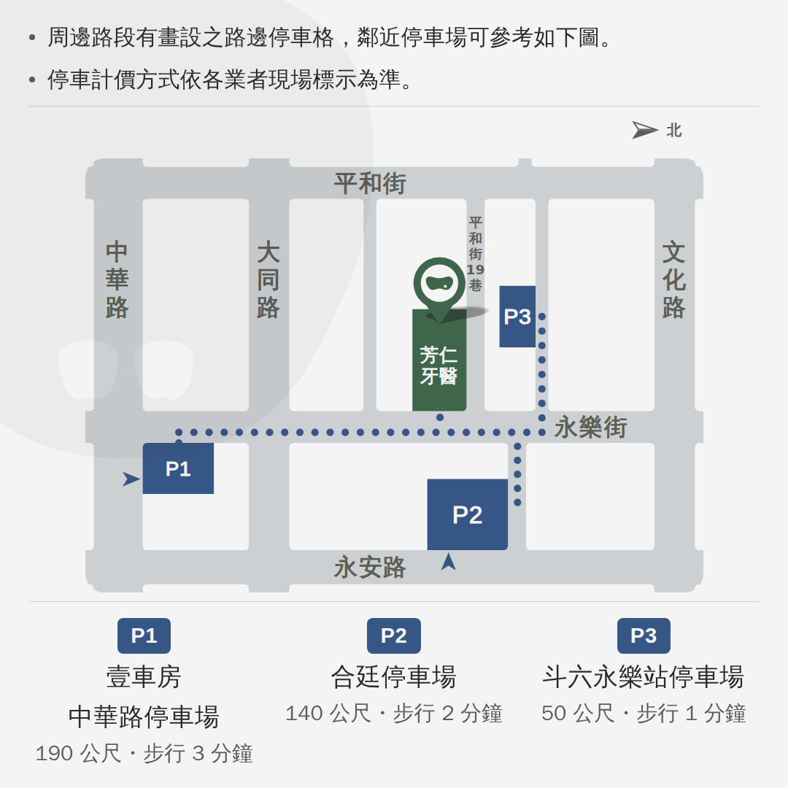
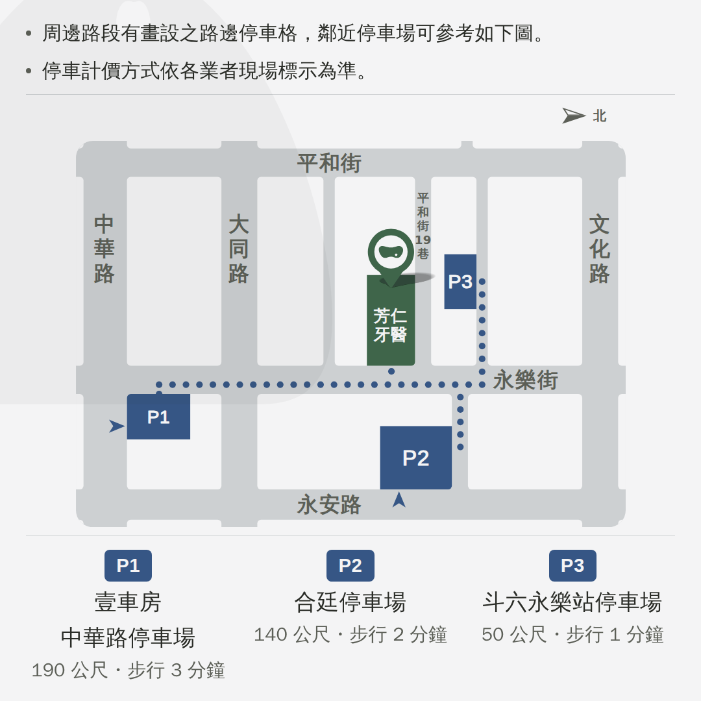
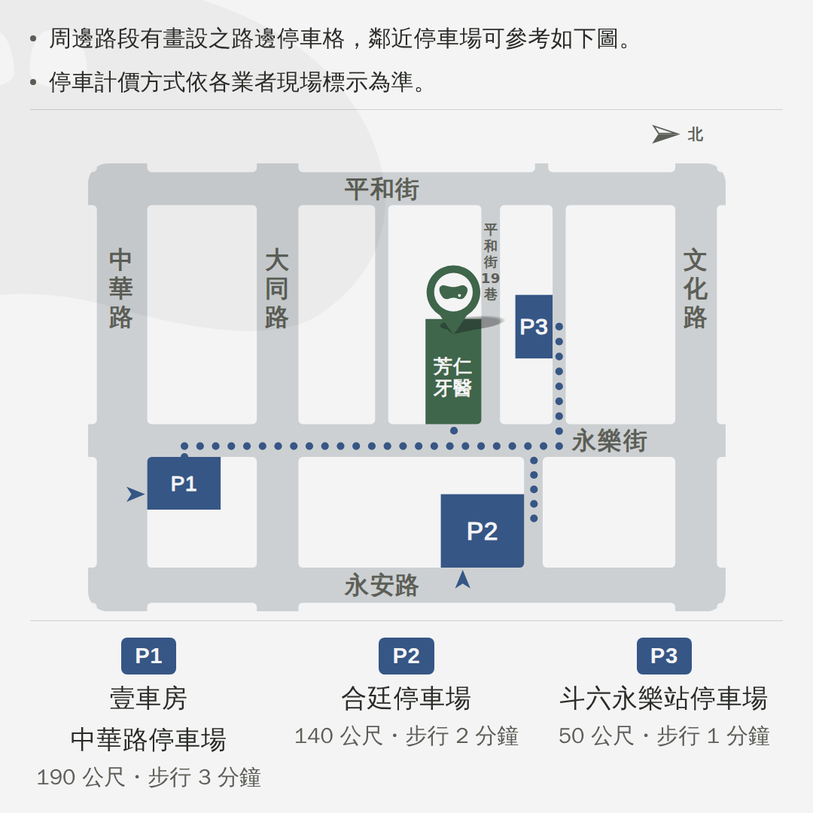
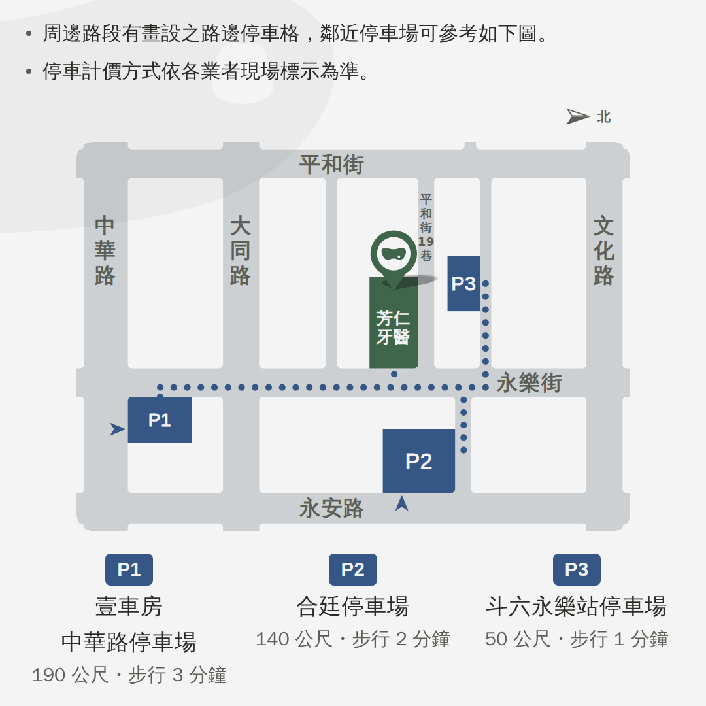

這三張圖貼到臉書上
2026-09-09。臉書一則一則看，所以浮水印回到三格版之前那一組 「一張一顆」；地圖那一顆換成和另外兩張不一樣的。 尺寸不用改 —— 1080×1080 就是臉書方形貼文的原生尺寸。
要上傳的那三張1080×1080・PNG
| 貼文 | 檔案 | 尺寸 | 浮水印 | |
|---|---|---|---|---|
| 門診表 | fangren-fb-hours-1080.png | 1080×1080・100KB | r3c1 660×660壓右下・看得到 600px・墨 5% | 完整規格 |
| 科別與醫師 | fangren-fb-docs-1080.png | 1080×1080・187KB | r1c2 952×469壓右下・看得到 512px・墨 4% | 完整規格 |
| 位置與周邊停車 | fangren-fb-map-1080.png | 1080×1080・124KB | r2c2 762×572壓左上・看得到 512px・左右鏡射・墨 4% | 完整規格 |
⚠ 門診表與科別醫師那兩顆一個值都沒有改，就是你 09-08 在那兩頁上挑定的那一組
（形狀、大小、切掉多少、濃度、壓哪一角）。
⚠ 地圖原本和科別醫師共用同一顆，理由是「兩個小格並排，浮水印不一樣會讀成兩件事」——
那個理由在臉書上不成立（兩則分開貼），所以換了一顆。
⚠⚠ 改放相簿之後，那個理由回來了一半（相簿的格狀縮圖裡它們又並排了）——
沒有改，見底下〈放進相簿〉那一節最後一段。


牙洞這件事兩張各自的答案
牙洞是這顆標誌唯一的識別特徵 —— 沒有它，剩下的就只是一團圓角形狀。
所以預設會讓它露出來，但那不是硬條件。
⚠ 地圖：那一顆的牙洞本來在左上（形狀寬的 17.5%），而這一張切掉的正是左邊那一截，
洞剛好被切走。左右鏡射之後洞落在畫布 (378.6, 93.7) ＝ 右上。
⚠ 科別醫師：從壓左上搬到右下，不轉。
它的洞在形狀的右下角，原樣搬過去之後看得到的是形狀的左上那一塊，洞落在畫布外面
(1246.8, 1002)。轉 180° 洞會回來，
但那樣整顆標誌是倒過來的 —— 一顆倒的標誌比一個看不到的洞更明顯，所以不轉。
地圖那一顆要換成哪一個五格，建議 r2c2
寬度不是同一個數字：九顆的長寬比 1.00~3.08、墨佔外框 59.6~83.2%，
同寬的話細長那幾顆會輕很多，所以一律按墨的面積正規化（基準是門診表那顆畫 660）。
切掉多少也不是另一把尺：一律切到看得到 512px 為止 ＝ 科別醫師那一張切 440 之後
剩下的寬度，這樣換形狀時份量不會跟著跳。
⚠ 門診表是 r3c1（長寬比 1.00）、科別醫師是 r1c2（2.03），
所以和兩張都分得出來的只有 r2c2（1.33）與 r2c3（3.08）那兩族；
r1c1 與 r3c2 是圓的、r2c1 是長條，各自會和其中一張撞。
牙洞 在畫布 (378.6, 93.7)

牙洞 在畫布 (312.4, 502.6)

牙洞 在畫布 (175.5, 110.7)

牙洞 在畫布 (29.5, 60.7)

牙洞 ⚠ 被切掉了
在臉書動態上長什麼樣375px 的手機
照片在動態裡是滿版，所以 1080 的圖畫出來就是螢幕那麼寬。 文字大約三行之後收成「查看更多」。


尺寸查過了，不用改1080×1080
臉書動態的方形照片貼文原生就是 1080×1080（1:1），這三張正好是。
⚠ 常看到的 1200×630 是「連結預覽卡」的規格，不是照片貼文的，不要拿來套。
⚠ 4:5（1080×1350）在手機上佔更多畫面，但這三張的內容是方的，
拉成 4:5 只會在上下多兩條空白 —— 換版型換不到東西。
⚠ 檔案上限 8MB，這三張是 100／187／124KB。
⚠ 這幾個數字是查來的二手資料（Meta 自己的說明頁這個容器連不出去）。
順帶一件是免費撿到的：門診表那張在 LINE 大格是裁切的，只看得到中間 537 列， 標題「芳仁牙醫開診時段」與最下面那行電話在 LINE 上根本看不到； 臉書整張 1080 都看得到，那兩樣自己回來了。
放進相簿2026-09-09 定的
⚠⚠⚠ 這一段推翻了上一版寫的「三張分開貼、不要一次貼三張」。
那句話只顧著「會不會被裁」，而裁切只影響動態上的縮圖 ——
點進去看到的一直是完整的原圖。使用者說「有沒有被裁剪好像還好」，他是對的。
⚠⚠ 而相簿換到的東西，正好是這三張圖存在的理由：LINE 主頁那三格是永久櫥窗、
臉書的動態是流水，粉專上唯一能長期站著、隨時翻得到的地方就是相簿。
沒有相簿的話，這三張兩個月後就沉到動態底下了。
⚠⚠ 還有一件是非用相簿不可的：一次選三張貼成一則， 整組只有一段共用的文字；而我們這三張的說明各不相同。 相簿裡每一張各自有自己的說明欄，三段字才貼得下去。
怎麼建
- 粉專 → 相片 → 相簿 → 建立相簿
- 相簿名稱建議「診所資訊」（不要用月份或年份 —— 這三張要放很久）
- 三張一起上傳，順序：門診表 → 科別與醫師 → 位置與周邊停車
- 每一張各自貼上它自己那段說明（下面那三段，整段複製）
- 發布
⚠ 已經單獨貼出去的照片事後也搬得進相簿（開那張照片 → 編輯 → 選相簿），
所以先貼再收也行。
⚠ 這幾步是查來的二手資料（Meta 的說明頁這個容器連不出去），
介面用詞可能和你看到的差一兩個字。
相簿之外還要做的兩件
- 門診表那一張，另外單獨再貼一則、釘選在最上面。 建相簿會在動態上出現一則格狀的多圖貼文，釘它等於釘一組縮圖； 而真正天天有人要看的是門診表，那一則單獨貼才是滿版的完整一張。 臉書的貼文有日期、半年後看起來像舊消息，釘選就是在治這件事 （LINE 主頁那個模組沒有時間戳，所以只有臉書要處理）。
- 臉書有留言區。這個帳號沒有專人即時回覆，所以文字裡 不可以寫「有問題留言問我們」那一類的話（現在一句都沒有，是要記著別加）。
⚠ 順帶一件被這一改弄成半真半假的：地圖那顆浮水印當初可以和科別醫師不一樣， 理由是「臉書上兩則是分開貼的，不會並排」——相簿的格狀縮圖裡它們又並排了。 沒有改，因為那顆是你挑的，而且浮水印只有 4% 的墨、縮到相簿縮圖幾乎看不見。
一件只有臉書才看得出來的地圖那則
那一則的前兩句，圖上已經印著一模一樣的兩句。
LINE 那邊「詳情」是收起來的、要按一下才展開，所以看不出重複；
臉書的文字就貼在圖的正上方，同兩句連著出現兩次。
⚠ 沒有自己改掉 —— 那一則的文字和 LINE 那一份是同一個出處，改了兩邊就分家。
下面是兩種擺法，要不要換是你的決定。

貼文的文字整段複製
⚠ 這三段和 LINE 那三則逐字相同，是從那一則自己的檔案讀回來的、 沒有重打。要改文字就回那一頁改，這裡會跟著換。
門診表
一週的門診時段，以及每一節有哪些科別。 早 08:45–11:30 午 13:45–16:30 晚 17:45–20:00 國定假日與各科特別門診請來電確認 05-5339369
科別與醫師
不確定自己的狀況要看哪一科，可以先從這裡找。 每一科底下寫的，就是那一科在做的事。 9 位醫師駐診・6 個部定專科。 一般牙科 https://fangren.net/topics/general/ 牙周治療 https://fangren.net/topics/perio/ 顯微根管 https://fangren.net/topics/endo/ 兒童牙科 https://fangren.net/topics/kids/ 齒顎矯正 https://fangren.net/topics/ortho/ 假牙重建 https://fangren.net/topics/prosth/ 口腔外科 https://fangren.net/topics/surg/ 醫師介紹 https://fangren.net/#doctors
位置與周邊停車
周邊路段有畫設之路邊停車格，鄰近停車場可參考如下圖。 停車計價方式依各業者現場標示為準。 P1 壹車房－中華路停車場 190 公尺・步行 3 分鐘 https://maps.app.goo.gl/z8Ds9sgX7YBy4mRw7?g_st=ic P2 合廷停車場 140 公尺・步行 2 分鐘 https://maps.app.goo.gl/tiHLpeKc2gETXRh96?g_st=ic P3 斗六永樂站停車場 50 公尺・步行 1 分鐘 https://maps.app.goo.gl/rwPydf3Mvt4fS4er7?g_st=ic 雲林縣斗六市永樂街 70 號 05-5339369
還沒問到的
- 兩張小的上面沒有寫診所名字。科別與醫師那張的標題是你 09-09 指定拿掉的 （理由是「上面那格門診表已經寫著芳仁牙醫」）—— 在臉書上三則是分開的，那個理由不成立。 不過臉書每一則貼文上面本來就有粉專的名字與頭像，所以只有在圖被單獨存下來、 轉傳出去的時候才看得出差別。要不要把標題加回臉書版，是你的決定，沒有自己動。
- 門診表那張上下各留 152px 的空白是為了 LINE 大格的裁切留的 （那一格只看得到中間 537 列）。臉書整張都看得到，所以那兩塊現在是純留白 —— 留著也乾淨，要把內容放大用滿也做得到，還沒問你。